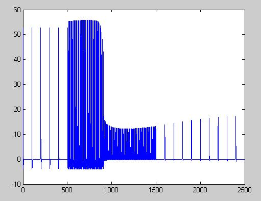
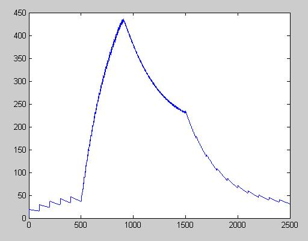

This is the readme for the model associated with paper Crook SM, Dur-E-Ahmad M, Baer SM (2007) A model of activity-dependent changes in dendritic spine density and spine structure. Math Biosci Eng 4:617-31 These matlab files were supplied by Dr Sharon Crook. Usage: After extracting the archive start matlab and cd to the mbe folder created by expanding the archive Run with the command run run_sp After finishing (7 minutes on a 3 GHz 2007 Pentium 4) the program reproduces figure 8 from the paper, for example the spine head voltage:  and the Ca concentration:  A figure8 data file is also created that stores these traces.